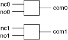

The following figure represents the NI PXI-2599 in the 2-SPDT general-purpose topology.

You can control the channels using the niSwitch Connect Channels VI or the niSwitch_Connect function.
For example, to connect the NO terminal of channel 1 to the COM terminal of channel 1, call niSwitch_Connect (vi, "no1", "com1"). If you now want to connect NC1 to COM1, first disconnect the existing connection. The sequence of calls for this task is as follows:
niSwitch_Disconnect(vi, "no1", "com1")
niSwitch_Connect(vi, "nc1", "com1")
|
Note niSwitch_Disconnect(vi, "no1", "com1") does not operate the relay until the niSwitch_Connect(vi, "nc1", "com1") is executed. |
|
Note For an initial connection, you do not need to disconnect the default channel (ncx) from COM after the module has been reset or a call to the niSwitch Disconnect All Channels VI or the niSwitch_DisconnectAll function has been made. |
When scanning the NI PXI-2599, a typical scan list entry could be nc1->com1;. This entry routes the signal connected to NC1 to COM1.